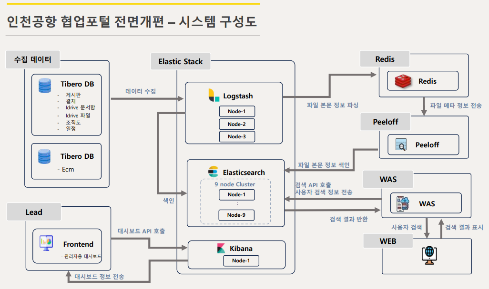

01
인천공항 협업포털
2025.03 — 2026.07
DATA PIPELINE
DATA UTILIZATION
인천공항 협업포털
검색 시스템 구축·고도화
여러 업무 시스템의 데이터를 수집 · 가공해 검색에 활용할 수 있도록 구성했습니다. 운영 과정에서 발견한 데이터 누락 문제를 해결하고 추천 검색어 생성을 자동화했습니다.
- 담당
- 데이터 수집 · 색인 / 검색 고도화
- 기술
- SQL, Logstash, Elasticsearch, Linux
- 핵심
- 데이터 파이프라인 / 검색 환경 구축, 누락 데이터 / 추천 검색어 자동 수집

KEY CONTRIBUTION
데이터 누락의 발생 조건을 확인해 수집 안정성 개선 · 추천 검색어 정기 생성 자동화